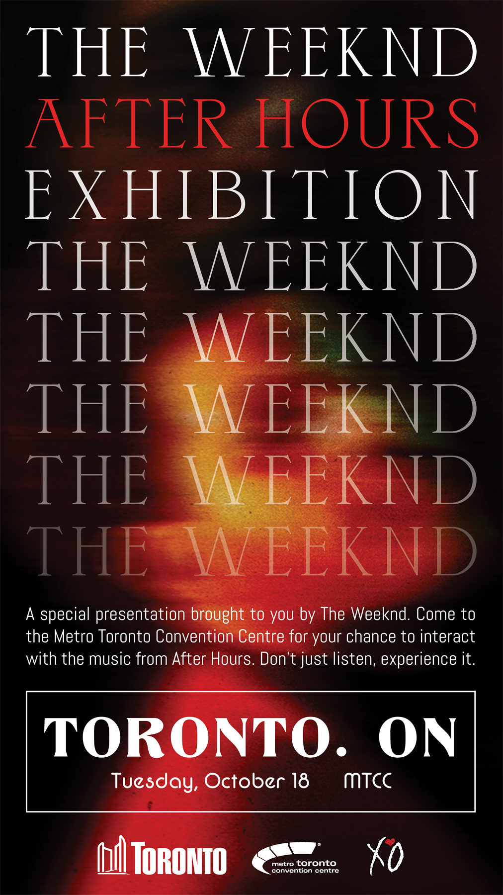
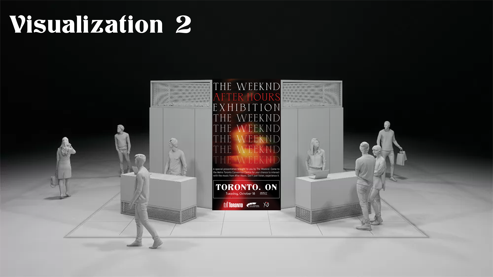
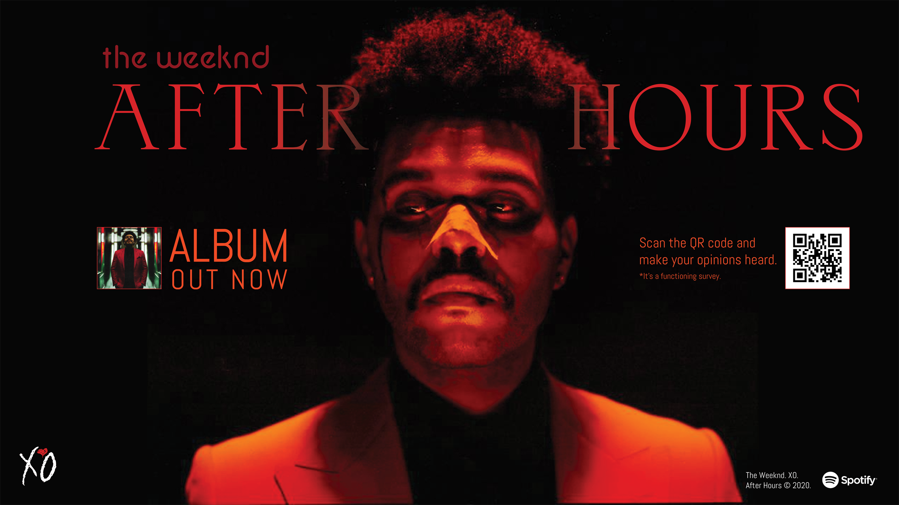

A full crowd culture marketing plan for After Hours — The Weeknd's landmark 2020 album. Three campaigns, three ideologies, one artist navigating the space between celebrity and self.
Overview
At the basis of crowd culture, branding is an essential aspect of marketing a product or service. The concept of crowd culture is the community of people connecting authentic purposes, ideologies, and services to leverage these ideologies to communicate with the crowd (Holt, 2016). Finding these opportunities for cultural innovation is why the Canadian singer known as The Weeknd has found his audience — targeting novel niches not afraid to be expressed compared to the norm in the music environment.
After Hours, released March 2020, is a fourteen-track long playing record — a reminiscence of Abel Tesfaye's mysterious background from his 2011 underground debut to the highest moments of his career. Throughout his eleven-year career, the Toronto-born artist played novelty through dark, genre-defining themes: trap and soul tunes of a drugged-out album embedded into almost every stance of his playlist.
"Take off my disguise. I'm living someone else's life."
— The Weeknd, Alone Again (After Hours, 2020)
61%
Millennial favourability
The 3 Ideologies
Three distinct ideologies run through After Hours, each informing a separate campaign direction. Together, they map the full emotional and cultural terrain of the album.
01
Individuality
The self-realization of his toxicity is at the center helm. The album takes on a return to form — from a voice full of scarring emotion to an award-winning force of nature.
02
Masculinity & Spirituality
A spiritual successor to the places he explored before. After Hours takes in the sounds of his early mixtapes while pushing into new territory of self-aware toxicity.
03
Maturity & Religion
References to losing his religion, the pain, the praying, and the overall death — combined with his vision of the villain and the self-hatred into a compelling narrative.
Campaign 01 — Going for Gold
Ideology — Masculinity & Spirituality
Fan-voted track reimagining
Taking advantage of the sentiments of The Weeknd's audience and their listening habits for After Hours — opinions are usually highly underrated. The common goal: build a community formed around the critiques, responses, and opinions of those who want to share the track they experienced as their unique moment.
Applying social media (Twitter and Instagram) to earn honest opinions about which songs have the most time played and replayed. Polling which songs are the most popular contributes to affective, cognitive, and behavioral engagement. By the end of the first month of release, the top three pieces will receive the "golden treatment" — a repackaged album featuring tracks most voted by fans.
Social Media · Month 1
Campaign 1 — fan-voted special edition album concept & CD mockup
Campaign 02 — The Man Behind The Mask
Ideology — Individuality
After Hours Exhibition — Toronto
An exhibition-style, one-stop-shop custom-made experience using brand activation to bring After Hours to life. The norm is that music is only heard — but after hearing the music, it is better to contextualize the concepts the artist has made in the messaging in a physical form.
The event takes place in Tesfaye's hometown of Toronto at the Metro Toronto Convention Centre, displaying in the first month of release. Having the iconic red suit, gloves, and sunglasses of Abel's character from the visualizations in glass casing inside a booth better supports the narrative. The audience can also try on props such as clothing, contributing to merchandise purchasing.
Brand Activation · MTCC Toronto · Month 1


Campaign 2 — After Hours Exhibition poster & 3D environment visualization
Campaign 03 — Making a Decision
Ideology — Maturity & Religion
Out-of-Home Billboard — Yonge Dundas Square
Utilizing an out-of-home approach with billboards around centres across the city — most importantly Yonge Dundas Square, where lives intersect the most. The campaign asks the audience: after listening to the album, is this a changed man, or one that falls more profoundly into the dark messages they hear?
A QR code in the corner of the advertisement allows followers to scan and vote — a simple "Yes or No" asking if the album showed a side of him not known until now. This alternative approach makes the message more visible for exposure. Timing is after the first month of release, and can be reused with future tours as messages seep into the listener's mind.
Out-of-Home · Yonge Dundas Square · Month 2+


Campaign 3 — Spotify album ad concept & Yonge Dundas Square billboard visualization
Reflection
This project reinforced how brand identity is determined through symbols and differences in the marketplace — the sum of various attributes that define the brand, distinguish it with features, and make it recognizable (Pareek, 2015). The Weeknd's After Hours is more than an album; it is an ideology made visible.
Tying it all together, After Hours was the lovechild at his starting line eleven years ago — the days of melancholy with the heightened energy Tesfaye brings today. Marketing toward his audience requires forming a human relationship while offering value to consumers and music as an entirety. The empty pleasure given upon sharing the emotions has built a sense of trust between the crowd and the artist. Infused is the deconstruction and establishment of this Tesfaye that will not be forgotten.